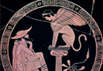

Oedipus
When he finally arrives at Thebes, Oedipus delivers the city from a curse. The Sphinx (the strangler), a monster which had the face of a woman, the body of a lion and the wings of a bird, had been sent by Hera. The Sphinx came to Thebes and asked all Thebans a riddle it had learned from the Muses. Whoever answered incorrectly was savagely killed. The riddle is the following
What creature walks upon four feet in the morning, upon two feet at noon, and upon three feet in the evening?
The answer, of course, is a human in our different stages of ageing (including a cane to make the three feet in old age). When Oedipus arrives he confronts the Sphinx and solves the riddle (see images 1-2).  Creon, Jocasta’s brother, had offered the throne to whomever could solve the riddle and Oedipus becomes the king of Thebes, therefore again unwittingly taking his mother Jocasta as his wife.
Creon, Jocasta’s brother, had offered the throne to whomever could solve the riddle and Oedipus becomes the king of Thebes, therefore again unwittingly taking his mother Jocasta as his wife.
{kind=link}